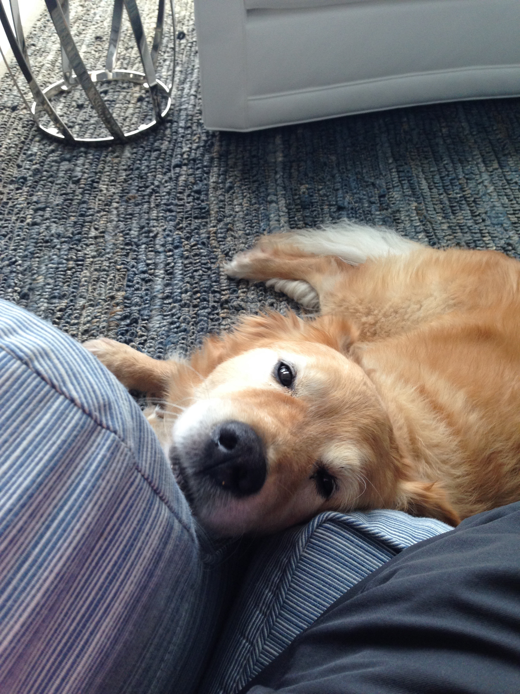
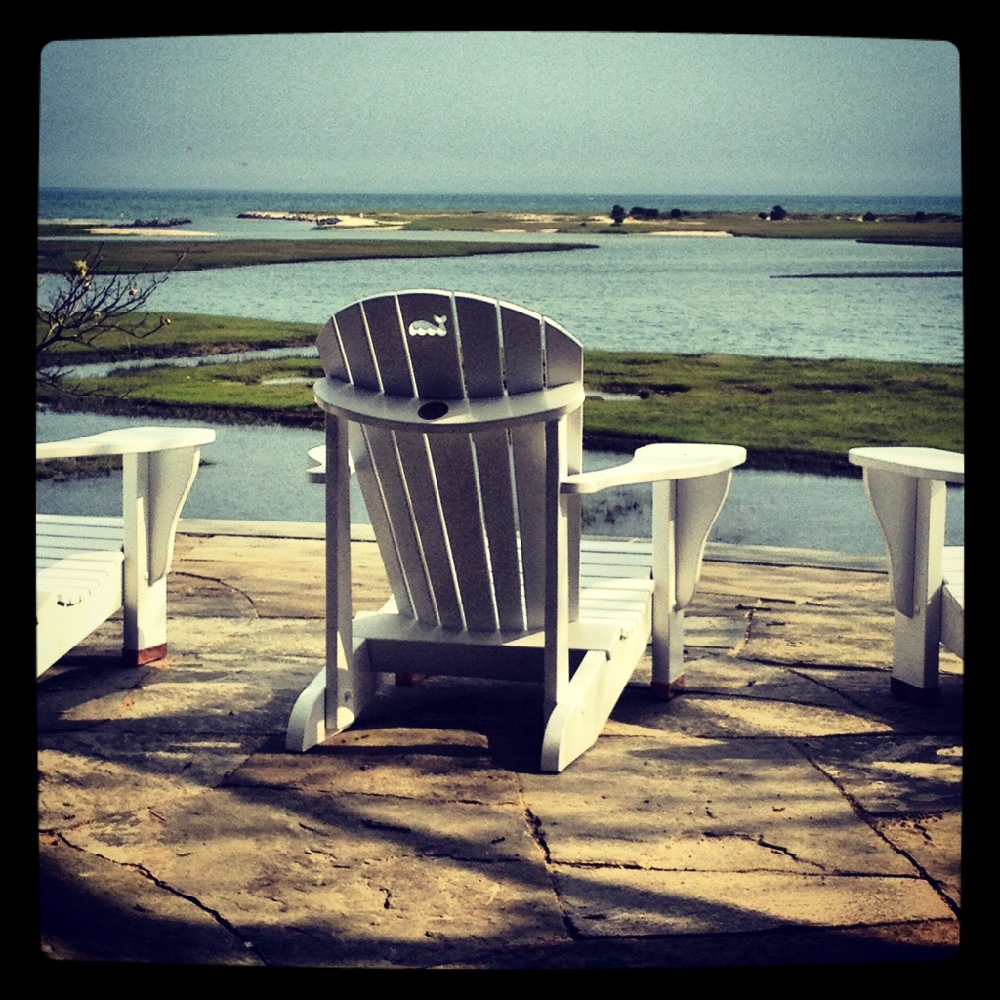
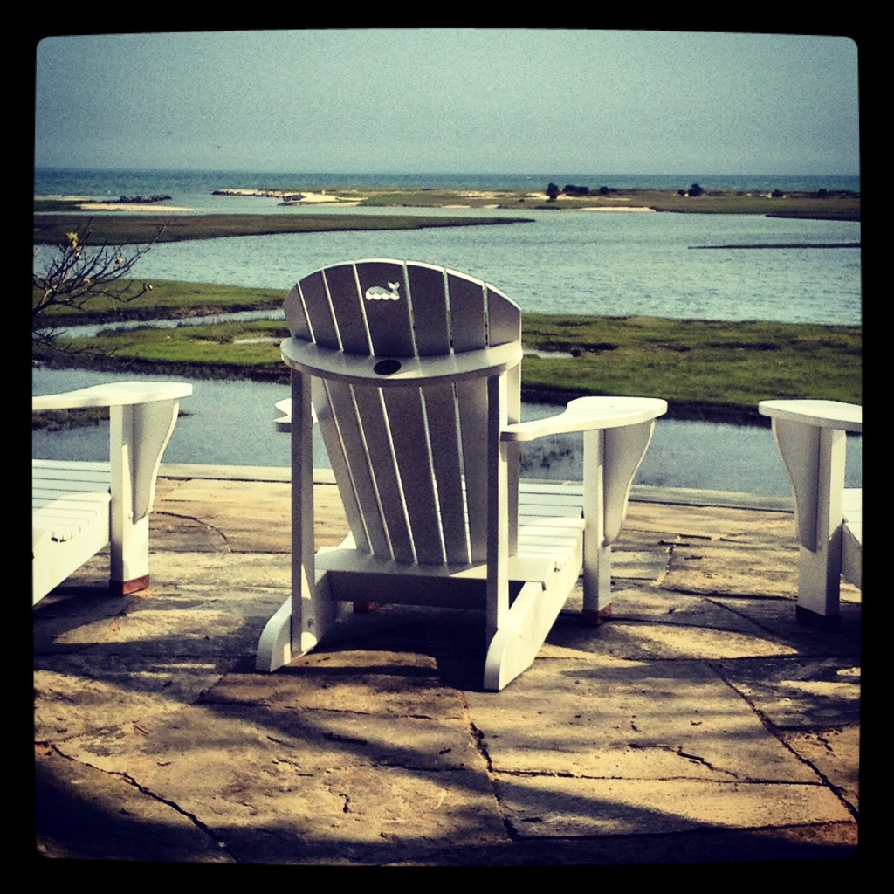
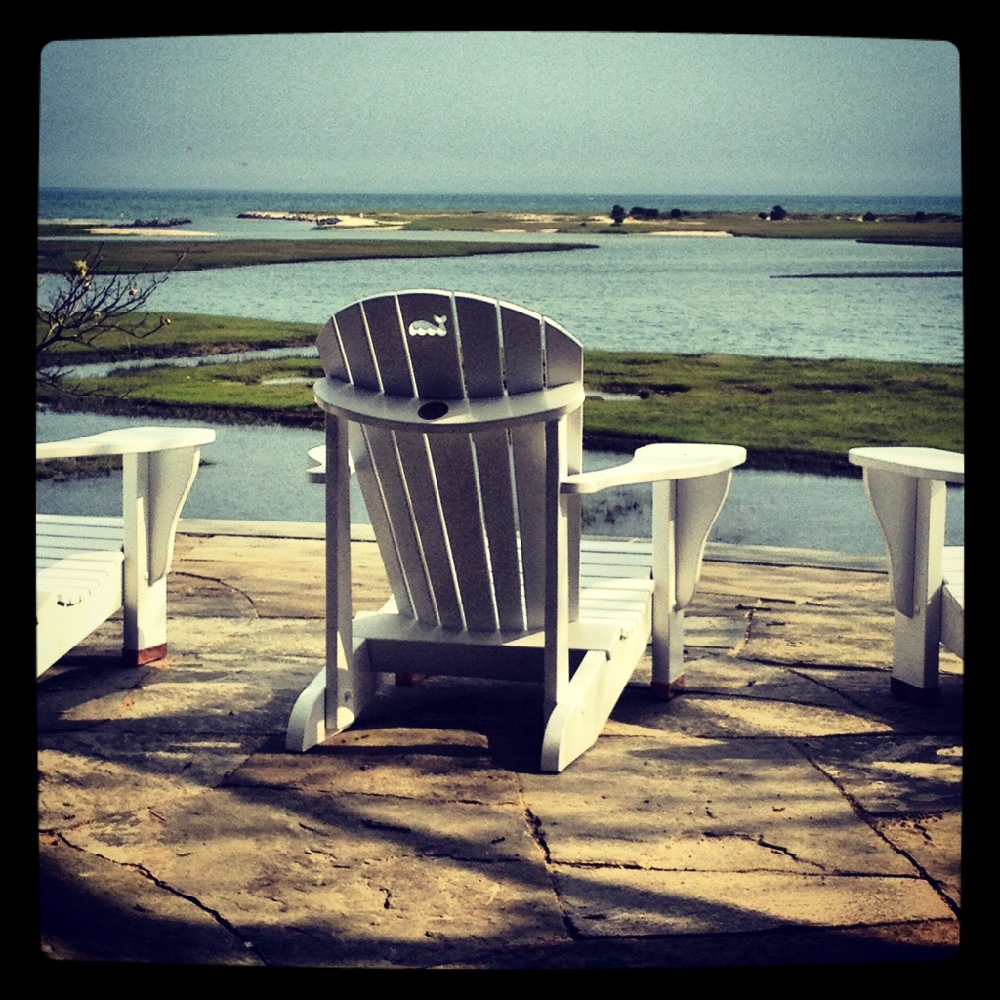

Hey! I'm Addison, a previous marketing enthusiast.
I used to work in digital and print marketing, and I decided to totally change course and immerse myself in hardcore web development, so I can become a stellar full-stack developer and channel my inner passion for solving puzzles.
Currently, I am enrolled at General Assembly in their Web Development Immersive program, looking for work in a web development position.

.jpg) 

pictured above: my sweet golden, Jordy | myself | and my favorite place on earth.

pictured above: my sweet golden, Jordy | myself | and my favorite place on earth.
I LOVE to travel and to learn, and I fully appreciate a team environment.
Topics Studied at General Assembly:
HTML5, CSS3, SCSS, SASS, Git, GitHub, Bootstrap, CLI, Sublime, Yeoman Scaffolding, Grunt, JavaScript, Bower Package Manager, jQuery, Ruby, Rails, SQL, RESTful APIs, NodeJS, Mongoose, MongoDB, Express, AngularJS
I am currently teaching myself ... D3 || Material Design Lite || jQuery UI
Topics Studied at General Assembly:
HTML5, CSS3, SCSS, SASS, Git, GitHub, Bootstrap, CLI, Sublime, Yeoman Scaffolding, Grunt, JavaScript, Bower Package Manager, jQuery, Ruby, Rails, SQL, RESTful APIs, NodeJS, Mongoose, MongoDB, Express, AngularJS
I am currently teaching myself ... D3 || Material Design Lite || jQuery UI